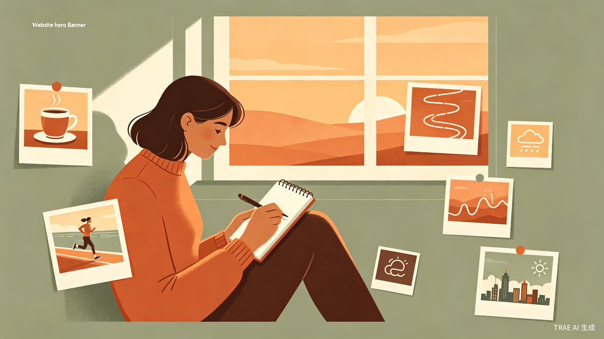
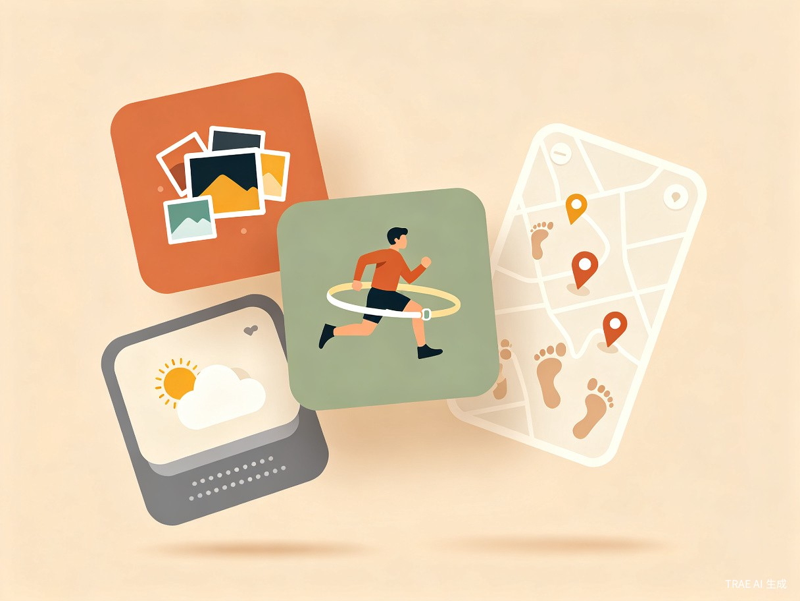
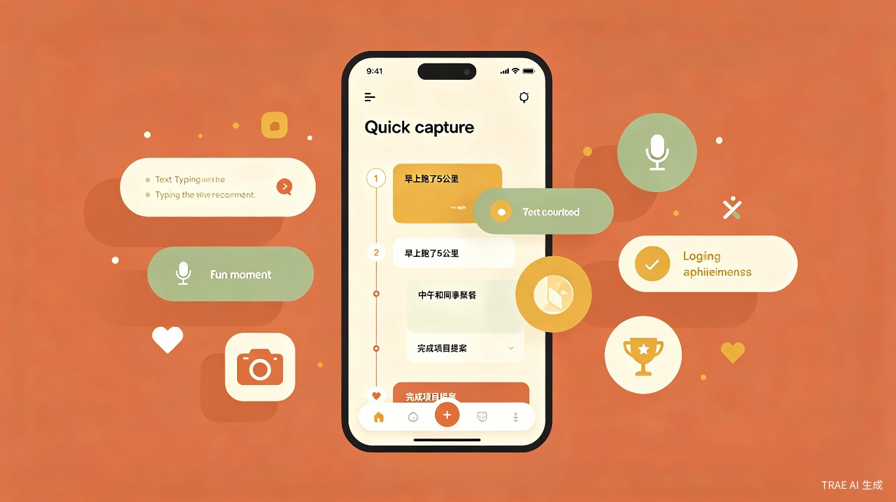
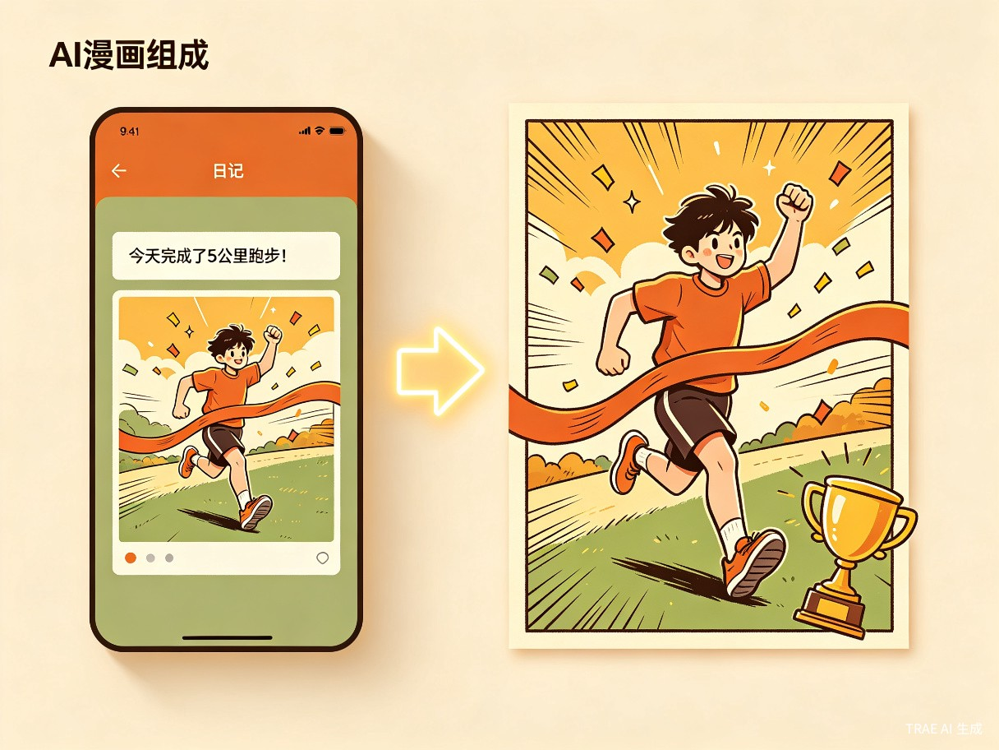
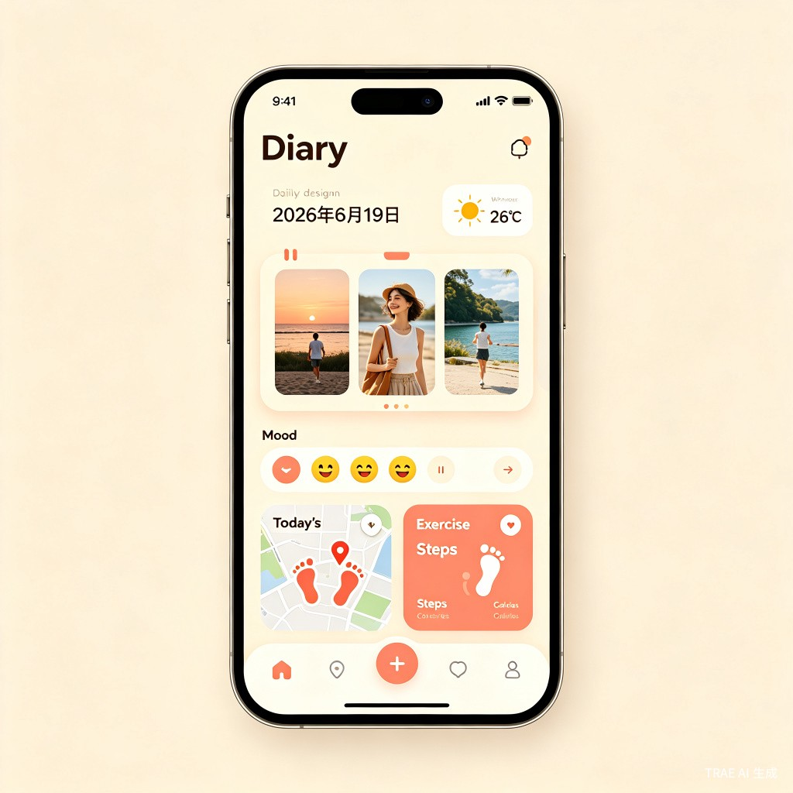

让每一天都值得被记住
一款智能日记 App，自动读取手机相册照片、运动记录、位置轨迹等数据，结合 AI 生成有温度的每日日记。随手记录趣事与成就，AI 还能将你的高光时刻变成专属漫画——记录情绪、天气、足迹，让生活碎片变成完整回忆。

My diary, my story
diadaily 是一款基于 AI 的智能日记应用，它不需要你每天苦思冥想地动笔——它主动收集你手机中的照片、运动数据、位置信息，自动生成一篇属于你今天的日记。随手记录趣事与成就，AI 还能将高光时刻变成专属漫画。
现代人生活节奏快，想记录生活却没时间写日记。珍贵的日常瞬间散落在相册、运动 App、地图轨迹里，彼此割裂，难以形成有温度的回忆。有趣的瞬间和成就感转瞬即逝，来不及记录就忘了。
某天翻看手机相册，发现几百张照片记录了生活的点点滴滴，但从未被整理成故事。运动 App 里有跑步轨迹，天气 App 知道那天下了雨——如果 AI 能把这些串联起来，日记就能自己"写"好。而那些值得纪念的趣事和成就，如果能变成漫画就更生动了。
一款移动端 App，后台自动同步手机相册、健康运动数据、位置信息，每天傍晚用 AI 生成一篇图文并茂的日记草稿。支持随手速记趣事和成就，AI 可将高光时刻一键生成专属漫画，让日记更有画面感。
不是每个人都会画画，但每个人都值得拥有自己的漫画故事。diadaily 的 AI 漫画引擎将你的趣事和成就转化为四格漫画、日系条漫等多种风格，让平淡的文字记录变成生动有趣的视觉记忆。
我们调研了 200+ 日记爱好者，发现手动写日记的放弃率高达 87%。核心痛点集中在三个方面：
每天写日记需要 15-30 分钟，工作一忙就断更。一旦中断两三天，就彻底放弃了。坚持写日记超过 3 个月的人不到 13%。
今天的照片在相册里，运动数据在健康 App 里，去了哪里在地图里，心情如何全凭记忆。想回顾一天，要在五六个 App 间来回切换。
翻看三个月前的照片，已经想不起当时的心情和天气。纯文字日记又太枯燥，缺少画面感。生活碎片无法拼成完整故事。
diadaily 从七个维度自动采集和生成日记内容，用户只需花 2 分钟浏览和微调，就能得到一篇有图有文有情感有漫画的完整日记。

自动识别当天拍摄的照片，按时间线排列，AI 生成照片描述。支持人脸识别和场景分类，自动挑选最有代表性的 3-5 张配图。
同步 Apple Health / Google Fit 数据，提取步数、运动时长、卡路里消耗、跑步轨迹。AI 将冷冰冰的数字转化为生动的运动叙事。
自动获取当天天气数据（温度、天气状况、空气质量），结合用户选择的情绪标签，AI 分析天气对心情的影响，生成情绪日记。
读取位置历史，在地图上绘制当日足迹路线。标注到访地点、停留时长，自动识别餐厅、公园、办公室等场所类型，生成足迹故事。
随时随地一键记录当天趣事和个人成就——支持文字、语音、拍照三种方式。AI 自动归类标签，如"工作突破""生活小确幸""运动里程碑"，让每个闪光点都不被遗漏。
选中任意趣事或成就，AI 一键生成专属漫画。支持四格漫画、日系条漫、Q版萌系等多种风格，自动设计分镜、对话气泡和角色表情，把你的高光时刻变成可分享的漫画故事。
生活中总有些值得记住的瞬间——一次工作突破、一顿惊喜美食、一个运动里程碑。diadaily 让你用 3 秒钟把它们留住。
不用打开复杂的编辑器，悬浮按钮一键呼出。支持文字输入、语音口述、拍照记录三种方式，无论在开会、吃饭还是跑步，都能随手记录当天的趣事和成就。

悬浮按钮一键呼出，文字/语音/拍照三种方式速记
选中任意一条趣事或成就，AI 自动设计分镜、角色和对话，一键生成可分享的漫画。让平淡的文字记录变成生动有趣的视觉记忆。

从文字记录到漫画故事，AI 一键生成
不需要任何绘画技能，AI 根据你的趣事内容自动设计漫画分镜、角色造型、对话气泡和表情动作。每一条记录都能变成一幅生动的漫画画面。
diadaily 面向 18-35 岁注重自我成长、热爱记录生活的年轻群体，他们渴望留住日常美好，却苦于没有时间和精力。
工作繁忙但内心丰富，下班后想回顾一天却提不起笔。diadaily 帮他们在通勤地铁上花 2 分钟浏览 AI 生成的日记，轻松保持记录习惯。
社交活跃、活动丰富，每天都有大量照片和足迹。diadaily 帮他们把碎片化的校园生活整理成有故事感的日记，方便分享和回忆。
坚持运动、注重数据，想记录每次训练的感受。diadaily 自动整合运动数据和身体状态，生成专业的训练日记和成长轨迹。
diadaily 从效率提升和社会价值两个维度创造意义，让记录生活从"负担"变成"享受"。
传统写日记平均耗时 15-30 分钟，diadaily 将其压缩到 2 分钟以内的浏览和微调。AI 完成数据采集、内容组织、文案撰写的全部重活，趣事速记只需 3 秒。
在快节奏时代，人们越来越缺乏自我对话的空间。diadaily 用低门槛的方式帮助用户建立每日反思习惯，趣事成就记录让用户看见自己的成长，AI 漫画让记录变得有趣可分享。
diadaily 采用端侧 AI 推理架构，保障隐私安全的同时实现智能日记生成。核心流程包括数据采集、AI 分析、内容生成三大环节。
flowchart TB
subgraph 数据采集层
A[📱 相册照片] --> D[数据聚合引擎]
B[🏃 运动健康数据] --> D
C[🗺️ 位置轨迹] --> D
E[🌤️ 天气 API] --> D
F[😊 用户情绪输入] --> D
Q[⚡ 趣事成就速记] --> D
end
subgraph AI 分析层
D --> G[端侧 AI 推理引擎]
G --> H[照片场景识别]
G --> I[运动语义分析]
G --> J[足迹故事生成]
G --> K[情绪天气关联]
G --> P[趣事成就归类]
end
subgraph 内容生成层
H --> L[日记内容合成器]
I --> L
J --> L
K --> L
P --> L
P --> R[🎨 AI 漫画引擎]
R --> S[漫画分镜生成]
L --> M[📝 图文日记草稿]
S --> M
M --> N[用户编辑微调]
N --> O[✅ 最终日记]
end
style A fill:#FAF6F0,stroke:#E07856,stroke-width:2px
style B fill:#FAF6F0,stroke:#7A9E7E,stroke-width:2px
style C fill:#FAF6F0,stroke:#D4A574,stroke-width:2px
style Q fill:#FFF6F0,stroke:#E07856,stroke-width:2px
style G fill:#FFF,stroke:#E07856,stroke-width:2px
style R fill:#FFF6F0,stroke:#D4A574,stroke-width:2px
style L fill:#FFF,stroke:#7A9E7E,stroke-width:2px
style O fill:#FAF6F0,stroke:#E07856,stroke-width:3px
diadaily 融入用户日常生活节奏，无需刻意操作，傍晚自动生成日记，睡前花两分钟微调即可。
flowchart LR
A[🌅 白天
自动后台采集] --> Q[⚡ 随手速记
趣事与成就]
Q --> B[🌇 傍晚
AI 生成日记草稿]
B --> C[📱 收到通知
今日日记已就绪]
C --> D[👀 浏览预览
查看图文内容]
D --> E{需要修改?}
E -->|是| F[✏️ 微调编辑
补充感悟]
E -->|否| G[✅ 一键保存]
F --> R[🎨 生成漫画
高光时刻变漫画]
R --> G
G --> H[📖 存入日记库
支持回顾搜索]
style A fill:#FAF6F0,stroke:#D4A574,stroke-width:2px
style Q fill:#FFF6F0,stroke:#E07856,stroke-width:2px
style B fill:#FFF,stroke:#E07856,stroke-width:2px
style R fill:#FFF6F0,stroke:#D4A574,stroke-width:2px
style G fill:#FAF6F0,stroke:#7A9E7E,stroke-width:2px
style H fill:#FFF,stroke:#7A9E7E,stroke-width:2px
界面设计采用温暖的奶油色调，搭配珊瑚橙和鼠尾草绿点缀，营造温馨私密的日记氛围。每一篇日记都是图文并茂的生活剪影。

主界面：今日日记概览，集成天气、照片、情绪、足迹、运动五大模块